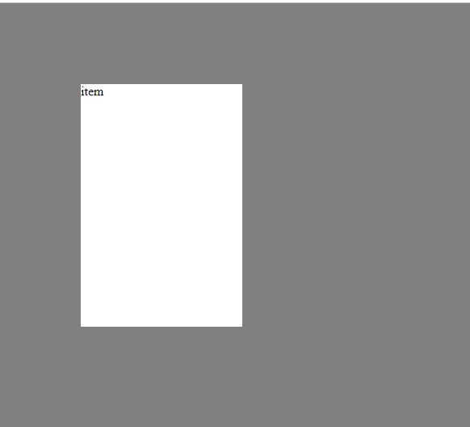

[CSS] 位置(position),表示(display)スタイル
Study / Javascript, Jquery, Css 作成日付 : 2019/12/13 20:08:50 修正日付 : 2019/12/16 23:10:07
こんにちは。明月です。
前述からCSSのスタイルに関して纏めています。
今回は要素の表示タイプと位置(postision）に関して調べてみます。
<!DOCTYPE html>
<html>
<head>
<style>
body {
background: gray;
}
div {
background: white;
}
</style>
</head>
<body>
<div class="item">item</div>
</body>
</html>
div.item {
/*表示スタイル*/
display: initial;
/*位置オプション*/
position: absolute;
/*上から位置*/
top: 100px;
/*左から位置*/
left: 100px;
/*要素の幅*/
width: 200px;
/*要素の縦*/
height: 300px;
}

上の例を見ればスタイルで「display」を使いました。
displayは要素のスタイルの形態を決めるものです。
displayの要素の値には下記とおりにあります。
| 値 | 説明 |
|---|---|
| inline | 要素をインライン要素（など）として表示します。 高さと幅のプロパティは効果がありません。 |
| block | 要素をブロック要素（ など）として表示します。 新しい行から始まり、幅全体を占有します。 |
| contents | コンテナを非表示にし、要素の子要素をDOMの次のレベルに上げます。 |
| flex | ブロックレベルのフレックスコンテナとして要素を表示します。 |
| grid | 要素をブロックレベルのグリッドコンテナとして表示します。 |
| inline-block | 要素をインラインレベルのブロックコンテナとして表示します。 要素自体はインライン要素としてフォーマットされますが、高さと幅の値を適用できます。 |
| inline-flex | 要素をインラインレベルのフレックスコンテナとして表示します。 |
| inline-grid | 要素をインラインレベルのグリッドコンテナとして表示します。 |
| inline-table | 要素はインラインレベルの表として表示されます。 |
| list-item | 要素を<li>要素のように動作させます。 |
| run-in | コンテキストに応じて、要素をブロックまたはインラインとして表示します。 |
| table | 要素を<table>要素のように動作させます。 |
| table-caption | 要素を<caption>要素のように動作させます。 |
| table-column-group | 要素を<colgroup>要素のように動作させます。 |
| table-header-group | 要素を<thead>要素のように動作させます。 |
| table-footer-group | 要素を<tfoot>要素のように動作させます。 |
| table-row-group | 要素を<tbody>要素のように動作させます。 |
| table-cell | 要素を<td>要素のように動作させます。 |
| table-column | 要素を<col>要素のように動作させます。 |
| table-row | 要素を<tr>要素のように動作させます。 |
| none | 要素は完全に削除されます。 |
| initial | このプロパティをデフォルト値に設定します。 初期について読みます。 |
| inherit | 親要素からこのプロパティを継承します。 継承について読みます。 |
「div」タグは基本displayが「block」に設定されています。「block」の場合は「width」が基本「100%」です。
なので上の例では「display」を「initial」に設定して「width」を設定しました。
また「position」のスタイルは要素の位置を決めるものです。
基本的にHtmlタグはとキュメンとスタイルで上から下、左から右方法で作成します。でも要素によって位置を変わりたい時がありますね。その時に使います。
| 値 | 説明 |
|---|---|
| static | デフォルト値。 文書フローに表示されるように、要素は順番にレンダリングされます。 |
| absolute | 要素は最初に配置された（静的ではない）親要素に対して配置されます。 |
| fixed | 要素はブラウザウィンドウに対して相対的に配置されます。 |
| relative | 要素は通常の位置を基準にして配置されるため、「left：20px」は要素の左位置に20ピクセルを追加します。 |
| sticky | 要素は、ユーザーのスクロール位置に基づいて配置されます。 スティッキー要素は、スクロール位置に応じて、相対要素と固定要素を切り替えます。 ビューポートで指定されたオフセット位置が満たされるまで相対的な位置に配置されます-そして、（position：fixedのように）所定の位置に「固定」されます。 注：IE / Edge 15以前ではサポートされていません。 -webkit-プレフィックス付きのバージョン6.1のSafariでサポートされています。 |
| initial | このプロパティをデフォルト値に設定します。 |
| inherit | 親要素からこのプロパティを継承します。 |
上の例は「absolute」で設定しました。「div」の親要素は「body」なので、画面の一番上、右、基準で「top」が「100px」、「left」が「100px」を設定します。
この「position」と「display」はよく使わないですが、よく使うスタイルですね。
特に「display」で「none」タグを利用して見えたり、見えなかったりする動的なスタイルを作るし、「position」で「fixed」や「absolute」でメニューの位置を決めることもします。
<style>
.test:hover {
display:none;
}
</style>
<input type="button" class="test" value="これをクリックできますか？" onclick="alert('まじで？');" >
例
上の例はマウスをボタンの上に置く(hover)を選択する選択子で「display」を「none」に設定しました。
つまり、マウスを上に置くとボタンがなくなりますね。お試してください。
- [CSS] ブラウザから開発する方法 (developer mode)2019/12/25 07:54:31
- [CSS] 色スタイル、グラデーション2019/12/24 07:37:22
- [CSS] アニメーション (animation)2019/12/20 20:51:38
- [CSS] トランスフォーム (transform)2019/12/19 13:00:26
- [CSS] トランジション(transition)2019/12/18 20:33:57
- [CSS] Columnスタイル2019/12/17 19:52:56
- [CSS] 整列スタイル (float)2019/12/17 00:08:54
- [CSS] 位置(position),表示(display)スタイル2019/12/13 20:08:50
- [CSS] border(枠)、余白スタイル - border, margin, padding2019/12/12 20:16:43
- [CSS] 文字スタイル2019/12/11 21:13:22
- [CSS] その他の疑似選択子 - link, visited, target, enabled, disabled, not, active, hover, focus2019/12/10 07:31:28
- [CSS] 疑似要素選択子 - fist-line, first-letter, before, after2019/12/09 07:28:27
- [CSS] 範囲と指定に関する選択子(全体選択子、要素選択子、孫選択子、子選択子、隣接選択子)2019/12/06 07:27:36
- [CSS] 疑似クラス - only-child, only-of-type, empty, empty, root2019/12/05 07:29:15
- [CSS] 疑似クラス - first-child, last-child, first-of-type, last-of-type2019/12/04 07:28:37
最新投稿
- [PHP] IOに関して2020/01/23 03:00:00
- [PHP] requireとinclude、そして「@」の使用方法2020/01/22 03:00:00
- [PHP] Fatal及びNotice,、Warningメッセージ処理する方法2020/01/19 03:00:00
- [PHP] xDebug設定する方法2020/01/18 03:00:00
- [PHP] $_SERVER, $GLOBALS, $_GET, $_POST, $_REQUEST, $_COOKIE, $_SESSION, $_FILES, $_ENV(getenv())2020/01/17 03:00:00
- [PHP] データ確認関数(var_dump, debug_zval_dump, print_r)2020/01/16 03:00:00
- [PHP] 例外処理(try ~ catch ~ finally)2020/01/15 03:00:00
- [PHP] 配列とリスト(list)2020/01/14 03:00:00
- [PHP] インタフェースと抽象クラス、クラス継承、parent、this2020/01/13 03:00:00
- [PHP] functionとclass使用方法、アクセス修飾子、そしてstatic2020/01/09 23:35:27
- [PHP] 基本ページ作成方法と変数使用方法2020/01/06 23:44:20
- [PHP] Composer設定2019/12/27 08:49:09
- [PHP] PHP 開発環境設定とEclipse(IDE)の設定2019/12/26 07:36:47
- [CSS] ブラウザから開発する方法 (developer mode)2019/12/25 07:54:31
- [CSS] 色スタイル、グラデーション2019/12/24 07:37:22